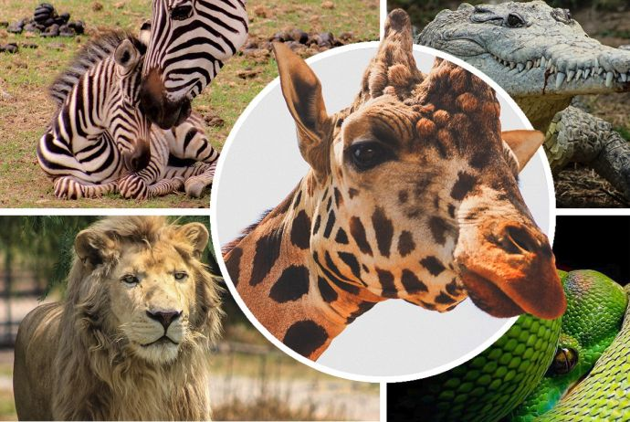
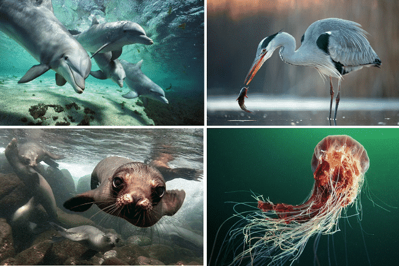
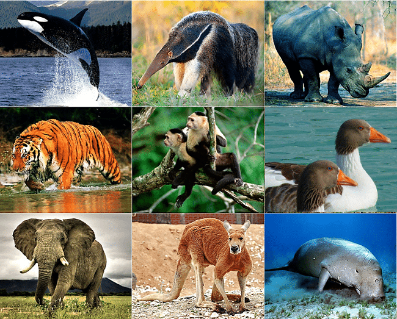
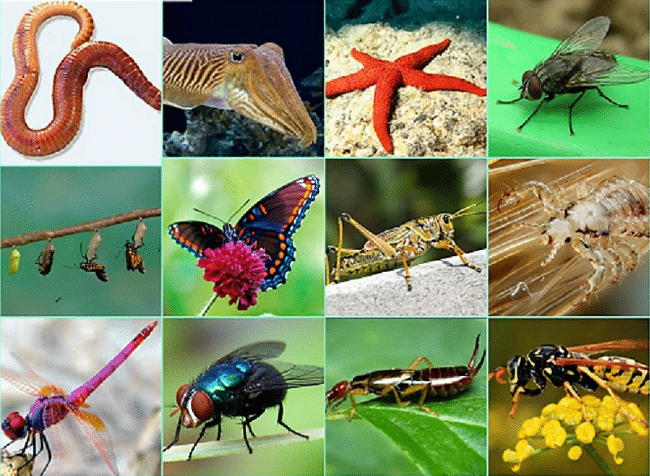

| ¿Qué es el reino animal? |
|---|
|  Es un conjunto de seres vivos que comparten características relevantes que los distingue de otros. Los animales que conforman este reino poseen una gran diversidad morfológica y conductual, son seres de carácter pluricelular eucariota, heterótrofo (es decir, se alimentan de otros seres vivos), su reproducción es sexual y locomoción autónoma. Por ello, los animales, incluso el ser humano, son organismos muy complejos. Ahora bien, los animales que conforman ese reino se clasifican en diversos filos o tipos de organización taxonómicas, siendo los más distinguidos los animales invertebrados (no poseen columna vertebral) y los vertebrados (poseen columna vertebral y cráneo) que a su vez pertenecen al filo de los cordados. En consideración a este punto, es importante resaltar que la taxonomía es la ciencia que se aplica para la jerarquizar y clasificar sistemáticamente los grupos animales y vegetales. |
| CARACTERÍSTICAS |
|

En el planeta Tierra existen un número considerable de animales que se logran diferenciar gracias a que se diferencian por especie,
composición celular y la alimentación que llevan a cabo. Entre las principales características están: -Eucariotas: animales cuyas células contienen un núcleo celular definido debido a su membrana nuclear. -Pluricelulares: son los organismos constituidos por dos o más células las cuales tienen funciones especializadas. -Heterótrofos: los animales necesitan ingerir y absorber nutrientes de otros seres vivos debido a que tienen la imposibilidad de producir sus propios alimentos. -Aerobios: los animales respiran, incluso a través de la piel, el oxígeno que obtienen del medio ambiente (agua, aire, suelo) que son los espacios donde se desenvuelven. -Reproducción: los animales se reproducen sexualmente, por ello hay células sexuales denominadas masculinas y femeninas. Sin embargo, existen algunos invertebrados cuya reproducción es asexual, es decir, a través de la mitosis. -Desarrollo: los animales pueden desarrollarse y nacer de diferentes maneras según su especia. Algunos animales son ovíparos (se desarrollan y nacen de huevos), vivíparos (se desarrollan y nacen directamente de la madre) y ovovivíparos (los huevos permanecen dentro de la hembra hasta su nacimiento). -Tejidos y órganos: se refiere a que los animales poseen tejidos celulares que se diferencian y especializan, de ahí que los seres vivos tengan piel, músculos, órganos, terminaciones nerviosas, sistema digestivo y sistema nervioso, entre otros. -Simetría: existen animales que son simétricos y otros no, esto depende su estructura física. Por ejemplo, los seres humanos tenemos una simetría bilateral, es decir, dos lados, izquierda y derecha. |
| CLASIFICACIÓN |
VERTEBRADOS Los animales vertebrados son aquellos que poseen vértebras y su número es menor con respecto a los animales invertebrados. Estos animales forman parte del filo de los cordados y son divididos en 5 clases, a saber que son:-Peces: viven en el agua, respiran a través de branquias, son ovíparos y tienen la sangre fría. -Anfibios: son cuadrúpedos y algunos tienen cola. Viven cerca del agua, son ovíparos y tienen la sangre fría. -Reptiles: poseen pulmones para respirar, son de sangre fría y son ovíparos. -Aves: tienen cuatro extremidades (dos alas y dos patas), aunque tengan alas no todas pueden volar. Tienen la sangre caliente y son ovíparas. -Mamíferos: tienen cuatro extremidades, son de sangre caliente, nacen del vientre materno. |
INVERTEBRADOS Los animales invertebrados se caracterizan por carecer de vértebras o huesos, por ser pluricelulares y sobrepasan en número a los animales vertebrados.-Poríferos esponjas. -Celentéreos: medusas y pólipos. -Gusanos: anélidos, nematodos y platelmintos. -Equinodermos: estrellas y erizos de mar. -Moluscos: cefalópodos, bivalvos y gasterópodos. -Artrópodos: insectos, arácnidos, crustáceos y miriápodos. |